-
算是一场说走就走的旅行吧，一切源于人民网看到的中国故事之西湖龙井的宣传片。四目所及尽是漫山遍野的茶园，古朴村落炊烟袅。被烟雨蒙蒙的江南春色给深深吸引... [详情]
标签:
旅游 杭州 住宿体验 踏青 旅游 达人体验 住宿体验 -
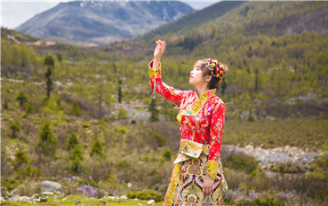
从成都到康定情歌，我唱了一首迟到的毕业之歌…成都到甘孜藏，属于你们的毕业旅行攻略又是一年毕业... [详情]
标签:
成都 毕业旅行 闺蜜 情侣 -
-
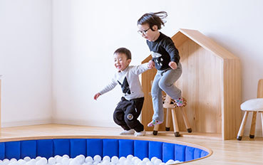
说到带孩子去游乐场玩，迪士尼乐园绝对是不可错过的选择之一。而且有个好消息，上海迪士尼乐园新的主题园区——玩具总动员——已经正式对公众开放啦！七大特色园区，保证让你玩到不亦乐乎。 [详情]
标签:
亲子 上海 迪士尼 民宿 -
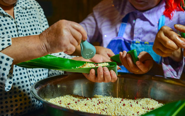
-
曾经听过一首歌：呜啦啦啦啦青海湖，蓝天下的白牦牛。便对青海湖边的白牦牛产生向往，等到这次终于站在了青海湖边，也终于一睹白牦牛的风采。 [详情]
标签:
自驾游 青海湖 避暑 耗牛 -
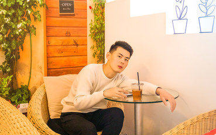
我从大雪纷飞的北方艳阳中走来，去往四季如春的南海。到深圳之前，我还在黑龙江的冰面上玩雪。零下20度的低温里，已然被冻的手脚冰冷。第二天，我穿着羽绒服汗流浃背的到了深圳，一瞬间喜.. [详情]
标签:
深圳 童话 福田CBD 趣味 -
推崇慢生活的《向往的生活2》开播了，这次何老师和黄小厨从北方来到了南方，住进了一栋白墙黑瓦的二层小楼，青山碧水、松柏翠竹、田野梯田，一派江南水乡的美景。看节目的你，是不是也不禁想问 [详情]
标签:
亲子 周边游 自然 民宿 桐庐 -
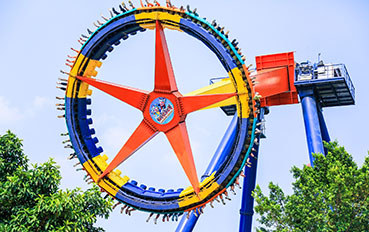
广州长隆有多好玩？看看它的乐园配置就知道啦！广州长隆共有4个乐园和1个大马戏，既可以看动物、看表演，也可以玩水、玩刺激，大人小孩都能在这里找到乐趣。 [详情]
标签:
亲子 广州 长隆 动物园 民宿 游乐园 -
造园这门学问，老祖宗研究了3000多年，考验着人的审美和耐心。现代人若要细细品位中国园林，必然绕不开扬州园林。位于古运河边的沙口桥东61号的＂六一居＂民宿，就是这样一个园子。主人将 [详情]
标签:
扬州 禅意 房东故事 园林 -
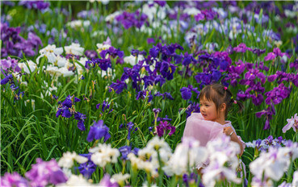
无锡太湖鼋头渚，不仅仅有春天里醉美的樱花，还有这个初夏中体现浓浓爱意的花菖蒲。初夏时节，蠡湖的湖畔，2018年无锡太湖鼋头渚第八届花菖蒲节如约拉开帷幕。如鸢似蝶、蓝... [详情]
标签:
摄影 樱花 赏花 -
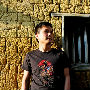 自驾惠州，踏寻鲜为人知的清新景色 作者：菜尾蝗
人生没有好走的路，除非是套路图文:菜尾蝗自驾旅行，是我旅行最喜欢选择的方式，喜欢开车到周边旅行，用一台车，拉近我和这个世界的距离，最近广州热成火炉，开车到知名的避暑胜地南昆山惠... [详情]
标签:
踏青 旅游 达人体验 住宿体验 -
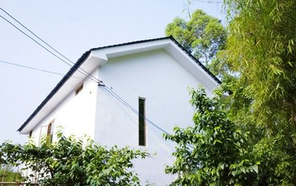
三圣乡这个地方，很多本地人会选择周末全家出游，也有很多聚会团建选择在这儿，农家乐遍地的这个地方，近年来也有不少文艺的店出现，使得三圣乡不再是中老年人爱去的地方，也是不少年轻人周.. [详情]
标签:
成都 周边游 达人体验 住宿体验 -
去过的地方不算多，虽说每个地方都有自己的特色，但如果一定要选某个地方长久的居住下来，那一定是大理。在大理，你可以时而放肆时而文艺，在人民路弹着吉他，在洱海边翻滚浪花。 [详情]
标签:
大理 洱海 苍山 国内旅游 -
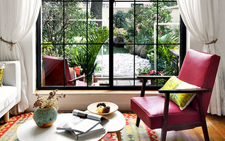
上海这个城市，东方韵味与欧洲风情并存，老建筑便是这座城市的记忆。老洋房是上海最经典的住宅，每一幢都承载着一个当年上海滩的传奇故事。如今的老洋房，被现代人写入了新的故事，民宿文化在这 [详情]
标签:
上海 历史 老洋房 文化 民宿推荐 -

热门目的地

有趣的房东
-
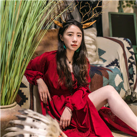 不按套路出牌的野生房东开民宿都是放养式的 成都 琪大仙儿
-
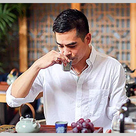 澳门土著的岛上民宿，百年岭南老屋 珠海蝉意民宿 黄俊华
-
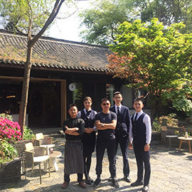 成都唯一的四合院民宿 上喜龙园 周宏松
-
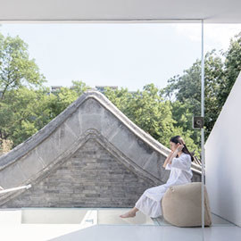 他改造的房子是后海最时髦的民宿 吾家可归 村长
发现全球美好住所


 热门文章
热门文章